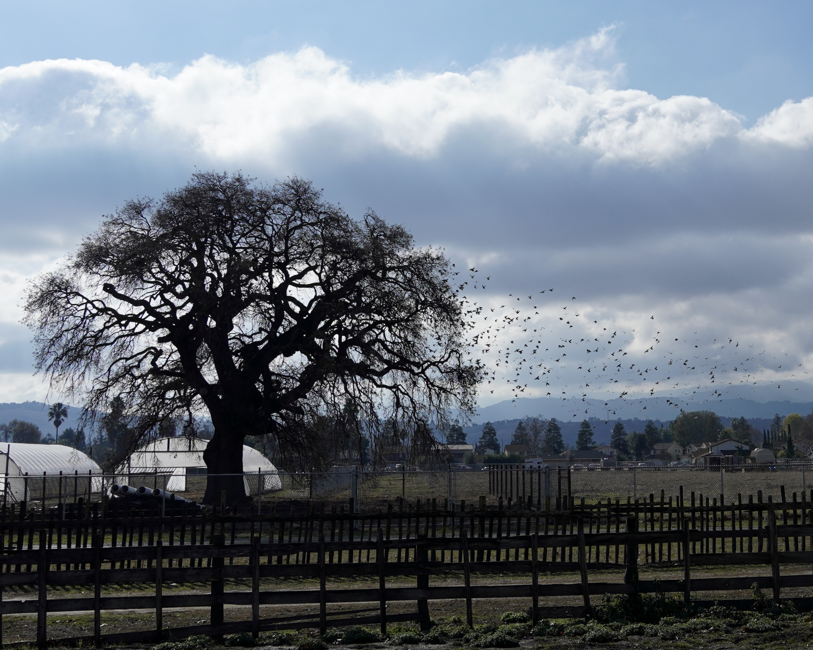

Public-interest urban forestry in San José
Oak & Apricot is an independent, public-interest project focused on understanding San José’s urban forest through field observation, mapping, and publicly available data.
Featured project: San José Street Tree Project
This public information page explains ongoing field observation work related to street tree replacement patterns across San José neighborhoods.
Open Street Tree ProjectThis work is independent, volunteer-based, and not affiliated with or representative of any employer, client, or contracted professional services.